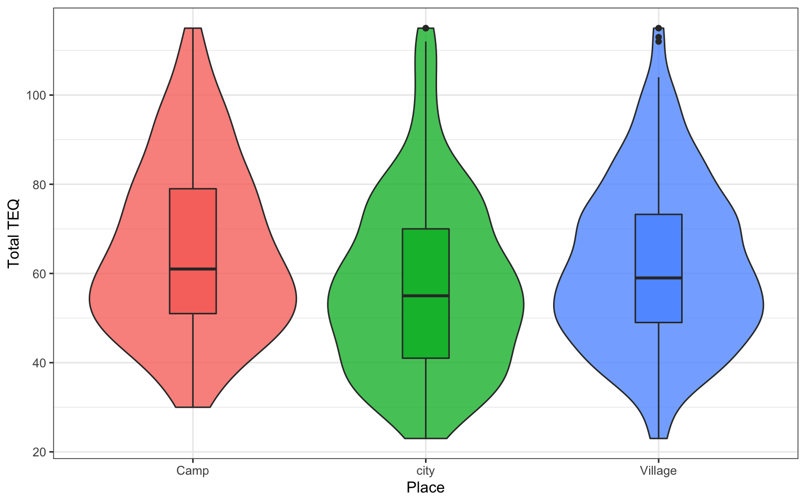

Session 4 Practical
4.1 Description of Data
We will work with a local dataset gathered from high school age children. Please download the .csv file HERE
library(tidyverse)
data <- read_csv("networkdataset.csv")4.2 Visualising Data
How many females and males?
The # symbol in the code is a comment. Comments do not add anything to the code but are there for human understanding to explain what is happening in the code. Look at the comments in the code below to understand what is going on.
# we are telling R we want to plot dat, we are letting R know Gender
# is a factor on our x axis and we want to fill with colour
ggplot(data, aes(x = as.factor(Gender), fill = as.factor(Gender))) +
# we are choosing a bar plot
geom_bar(show.legend = FALSE, alpha = .8) +
# we are naming the x scale
scale_x_discrete(name = "Gender") +
# we are chosing a colour scheme from pre-exising options
scale_fill_viridis_d(option = "D") +
# we are naming the y scale
scale_y_continuous(name = "Number of participants")+
# we are chosing a theme from pre-existing options
theme_minimal()
Figure 4.1: Participant Gender
- Are there more males or females?
4.3 Working With Data
Participants rated themselves on 23 items of the TEQ questionnaire. We would like to create a plot to visualise the total TEQ and where participants live. However, we need to clean the data a little bit first. We will explain each line.
The pipe operator %>% means "and then"
- we create a new dataframe called
total_TEQwhich we assign to our new code - we then use
select, the . lets R know we are still working with the same dataframe. We then select all TEQ variables, Pcode and Placeselect(., TEQ1:TEQ23, Pcode, Place gathertranforms the data from wide to long. We only want it to do this to TEQ variables so we-Pcodeand-Place- We then use
group_by(Pcode, Place)as we want to look at scores for each participant and where they live - Finally
summarise(tot_TEQ = sum(score))creates a column named tot_TEQ which has the total TEQ score for each participant.
total_TEQ <- data %>%
select(., TEQ1:TEQ23, Pcode, Place) %>%
gather("var", "score", -Pcode, -Place) %>%
group_by(Pcode, Place) %>%
summarise(tot_TEQ = sum(score))ggplot(total_TEQ, aes(x = as.factor(Place), fill = as.factor(Place), y = tot_TEQ)) + geom_violin(show.legend = FALSE, trim = TRUE, draw_quantiles = c(0.25, 0.5, 0.75)) +
geom_jitter(height = 0, width = 0.1, show.legend = FALSE) +
scale_y_continuous(name = "Total TEQ") +
scale_x_discrete(name = "Place")

Figure 4.2: TEQ Scores
What location tends to have highest TEQ?